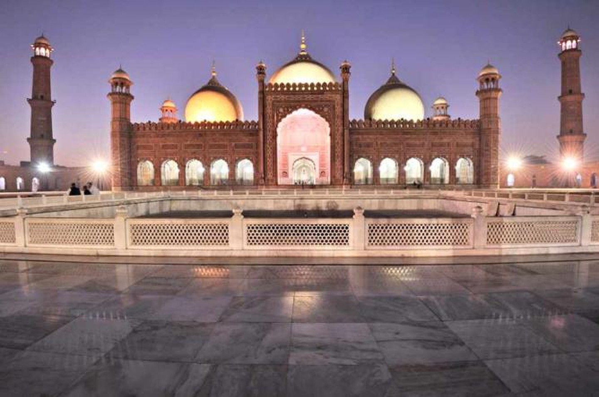
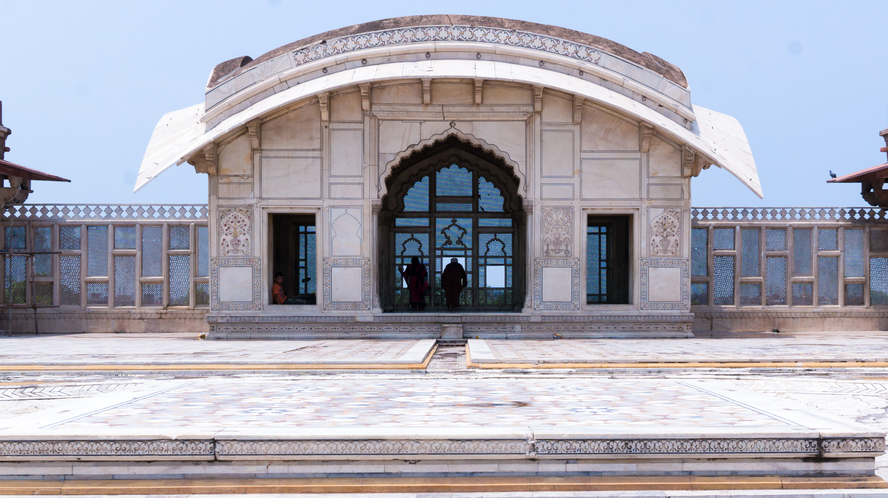
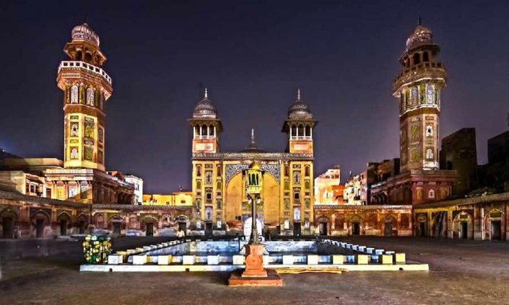
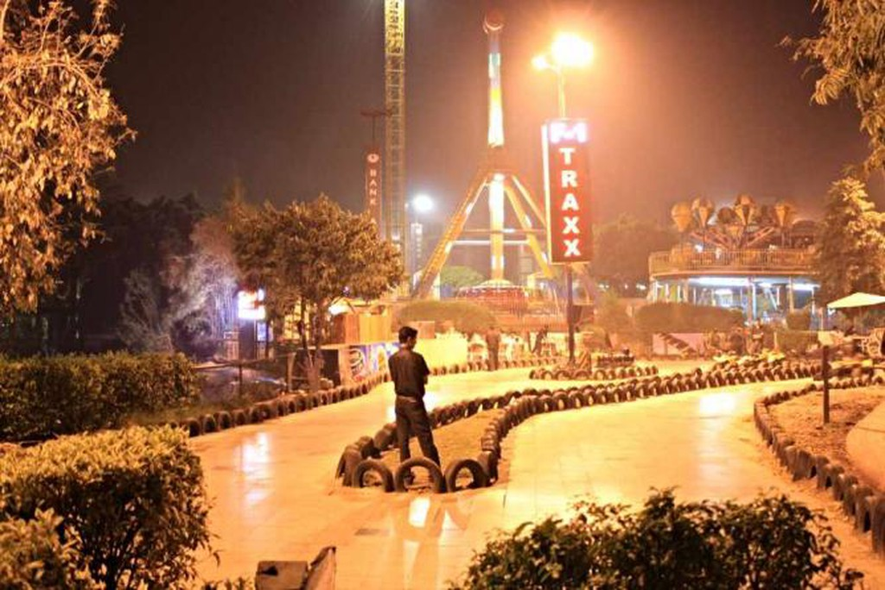
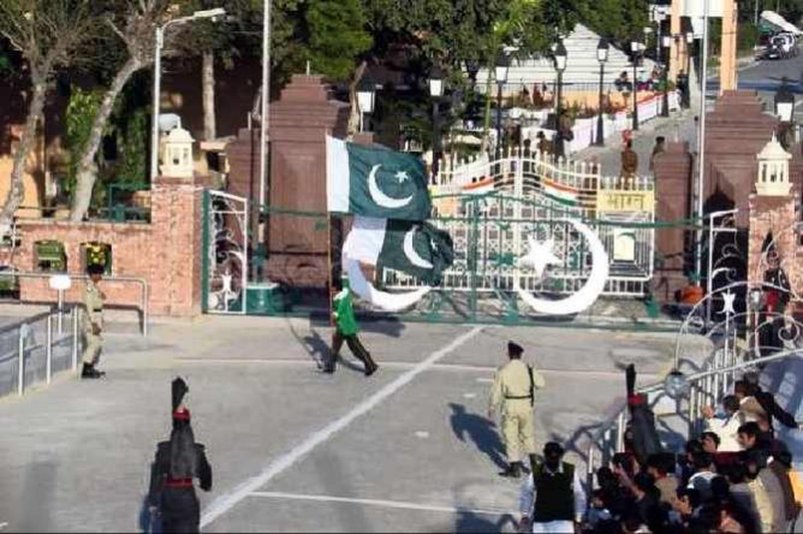

Lahore, Pakistan, is popular for its array of tourist activities.
From seeing priceless artifacts to historical sites to shopping places to a variety of restaurants, the options are endless. Here are the top 10 activities in Lahore.
Badshahi Mosque

For those visiting Lahore, the Badshahi Mosque is a real treat.
This mosque is one of the most famous in the world and was built in the year 1674 by Aurangzeb,
the Mughal emperor. According to reports, it was discovered that this mosque can hold around 40,000 people for worshiping in a single prayer session.
The interesting thing about it is that it is made entirely of red sandstone. Visitors will be able to witness relics which belonged to the prophet Muhammad,
his daughter and his son-in-law.
minar_e_pakistan
Minar-e-Pakistan is a monument well-known for being a prefect representation of the ideology of Pakistan. This monument is located in the famous Iqbal Park of Lahore which is one of the country’s largest urban parks. Built during the 1960s, it holds a special patriotic sentiment for the country as on this site the Lahore Resolution was passed by the All-India Muslim League on 23rd of March, 1940. Visitors flock to this tourist destination to witness the monument’s architecture, which is a blend of Islamic, Mughal and Modern styles
Naulakha Pavilion

The Naulakha Pavilion (Urdu: نولکھا) is a white marble personal chamber with a curvilinear roof,
located beside the Sheesh Mahal courtyard, in the northern section of the Lahore Fort in Lahore, Pakistan.
The monument is one of the 21 monuments situated within the Lahore Fort, with its western façade providing a panoramic view of the ancient city of Lahore.
Masjid Wazir Khan

If you like aircrafts and all things aeronautic, then the Pakistan Air Force Museum is a must-visit.
It is home to many aircrafts, like planes and jets and radars and weaponry that have been used by the Pakistan Air Force throughout the years, especially during the 1965 war with India. Nearby, there are World War 1 and 2 scale models and some modern planes on the display as well.
There are also food options in the main park and many places to relax in the gardens.
Mini Golf Club

This is an ideal place to take a bit of break from all the traveling and exploring.
This popular hangout place for Lahore’s youth has more to offer than just mini golf.
Visitors who are looking for some fun with their travel companions can spend the day playing the game.
Then, in the evening, enjoy the great atmosphere of the club with some hookah and delicious fusion food.
Lahore Wagah Border

A trip to Lahore would not be complete without an evening at the Wagah border. This place marks the border between Pakistan and its neighbor, India.
Every evening tourists come to this place to witness the Wagah border ceremony, which is a military practice performed by both Pakistan and India at the same time since 1959.
The cheering crowd and the elaborate drill on both sides is something which every visitor should experience before leaving the city of Lahore.